
 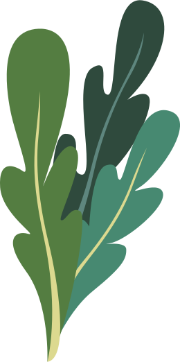
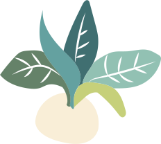
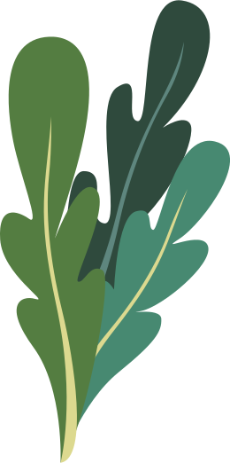
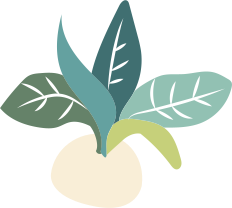

 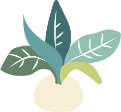
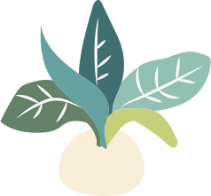


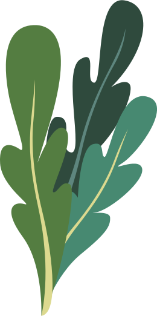
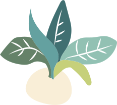
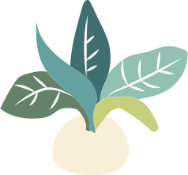
ทฤษฎีใหม่ขั้นต้น
" การผลิตเป็นการผลิตให้พึงตนเองได้ด้วยวิธีง่ายๆ
ค่อยเปนค่อยไปตามกําลังให้พอมีกินไม่อดอยาก”
(พระราชดํารัส เมือวันที 15 มีนาคม 2537)
แนวทางสําคัญในการดําเนินงาน เกษตรตามแนว "ทฤษฎีใหม่"
- เป็นระบบการผลิตแบบเศรษฐกิจพอเพียง ที่เกษตรถรสามารถเลี้ยงตัวเองได้ในระดับที่ประหยัด - ต้องมีพื้นทีส่วนหนึ่งทํานาข้าว เพื่อให้มีบริโภคตลอดทั้งปี - ต้องมีนํ้าสํารองไว้ใช้เพียงพอตลอดปี เพื่อการเพาะปลูกในระยะฝนทิ้งช่วง หรือในฤดูแล้ง - ใช้อัตราส่วนดังนี้ในการแบ่งพื้นที่ออกเป็น 4 ส่วน 30 % ใช้ขุดสระเก็บกักนํา้ 30 % ใช้ปลูกข้าว 30 % ใช้ปลูกพืชผัก ผลไม้ พืชไร่ ไม้ยืนต้น 10 % ใช้เป็นที่อยู่อาศัยและอื่นๆขุดสระเก็บกักน้ำ
พื้นที่ประมาณ 30% ให้ขุดสระเก็บกักนํา้ เพื่อให้มีนํา้ใช้สมํา่เสมอตลอดปี โดยเก็บกัก นํา้ฝนในฤดูฝน และใช้เสริมการปลูกพืชใน ฤดูแล้ง หรือระยะฝุนทิ้งช่วง ตลอดจนการ เลี้ยงสัตว์ และพืชนํา้ต่างๆ เช่น ผักบุ้ง ผักกระเฉด โสน ฯลฯปลูกผลไม้ ไม้ยืนต้น
พื้นที่ประมาณ 30 % ให้ปลูกไม้ผล ไม้ยืนต้น พืชไร่ พืชผัก พืชสมุนไพร ฯลฯ อย่างผสมผสานกันและหลากหลายใน พื้นที่เดียวกันเพื่อใช้เป็นอาหารประจําวัน หากเหลือจากการบริโภคก็นําไปขายได้ปลูกข้าว
พึ้นที่ประมาณ 30 % ให้ปลูกข้าวในฤดูฝน เพื่อใช้เป็นอาหารประจําวันสําหรับครัวเรือน ให้เพียงพอตลอดปี โดยไม่ต้องซื้อหาใน ราคาแพง เป็นการลดค่าใช้จ่ายและสามารถ พึ่งตนเองได้ที่อยู่อาศัย และอื่นๆ
พื้นที่ประมาณ 10% ใช้เป็นที่อยู่อาศัย เลี้ยงสัตว์ ถนน คันดิน โรงเรือนและสิ่งก่อสร้างอื่นๆ รวมทั้งคอกสัตว์ เรือนเพาะชํา ฉางเก็บผลิตผลการเกษตร ฯลฯ
เว็บไซต์นี้เป็นส่วนหนึ่งของวิชาออกแบบเว็บไซต์ หลักสูตรนิเทศศิลป์ คณะสถาปัตยกรรมศาสตร์ และการโปรแกรมและสื่อประสมแขนงวิชาการพัฒนาสื่อประสมและเกม คณะเทคโนโลยีสารสนเทศ สถาบันเทคโนโลยีพระจอมเกล้าเจ้าคุณทหารลาดกระบัง ©2019


 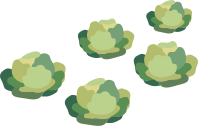
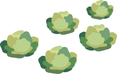


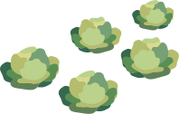
ทฤษฎีใหม่ขั้นต้น การจัดสรรที่อยู่อาศัยและทำกิน
พื้นที่ซึ่งเฉลี่ยแล้วเกษตรกรไทยมีเนื้อที่ถือครอง 10-15 ไร่/ ครอบครัว โดยแบ่งออกเป็น 4 ส่วน คือ แหล่งน้ํา : นาข้าว : พืชผสมผสาน : โครงสร้างพื้นฐาน ในอัตราส่วน 30 : 30 : 30 : 10 ดังนี้ส่วนที่ 1 ร้อยละ 30 ให้ขุดสระกักเก็บน้ำในฤดูฝน
เพื่อใช้ในการเพาะปลูกและเสริมการปลูกพืชใน ฤดูแล้งไดัตลอดปี ทั้งยังใช้เลี้ยงปลา ปลูกพืชน้ำ และพืชริมสระ เพื่อการบริโภคและ เพิ่มรายได้ ให้กับครอบครัวอีกทางหนึ่ง โดยพระราชทาน แนวทางการคำานวณเว่าต้องการนํ้า 1,000 ลูกบาศก์เมตรต่อการเพาะปลูก 1 ไรj โดย ประมาณ และบนสระนํhาสามารถสร้างเล้าไก่ เล้า เปิด และเล้าสุกรเพิ่มด้วยก็ได้ส่วนที่ 2 ร้อยละ 30 ให้ปลูกพืชผสมผสาน
ปลูกไม้ผล ไม้ยืนต้น ไม้ใช้สอย ไม้ทําเชื้อเพลิง ไม้สร้างบ้าน พืช ผัก พืชไร พชสมุนไพรฯลฯ เพื่อการบริโภคและ ใช้สอยอย่างพอเพียง หาก เหลือบริโภคก็นําไป จําหน่ายเป็นรายได้ต่อไปส่วนที่ 3 ร้อยละ 30 ให้ทํานาข้าว
เนื่องจากคนไทยบริโภคข้าวเป็นอาหารหลักโดย มีหลักเกณฑ์เฉลี่ยเกษตรกรบริโภคข้าว คนละ 200 กิโลกรัมข้าวเปลือก/ปี ซึ่งเพียงพอต่อการ บริโภคตลอดปี เพื่อยืดหลักพึ่งตนเองได้อย่าง มีอิสรภาพส่วนที่ 4 ร้อยละ 10 เป็นโครงสร้างพื้นฐาน
คือเป็นที่อยู่อาศัยและอื่นๆ เช่น ถนน ลานตาก ฉางข้าว กองปุ๋ยหมัก โรงเพาะเห็ด พืชผักสวนครัว เลี้ยงสัตว์และโรงเรือนเก็บอุปกรณ์ทฤษฎีใหม่ขั้นต้น
" การผลิตเป็นการผลิตให้พึงตนเองได้ด้วยวิธีง่ายๆ
ค่อยเปนค่อยไปตามกําลังให้พอมีกินไม่อดอยาก”
(พระราชดํารัส เมื่อวันที่ 15 มีนาคม 2537)
เว็บไซต์นี้เป็นส่วนหนึ่งของวิชาออกแบบเว็บไซต์ หลักสูตรนิเทศศิลป์ คณะสถาปัตยกรรมศาสตร์ และการโปรแกรมและสื่อประสมแขนงวิชาการพัฒนาสื่อประสมและเกม คณะเทคโนโลยีสารสนเทศ สถาบันเทคโนโลยีพระจอมเกล้าเจ้าคุณทหารลาดกระบัง ©2019